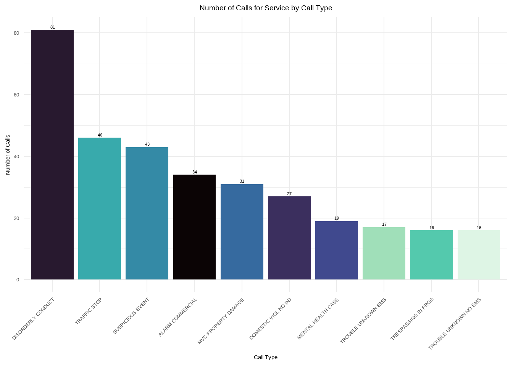

Week 38 dates: 14 Sep through 20 Sep Weekly Report: Week 38 (14 Sep through 20 Sep)
Introduction
This is the weekly report for week 38 covering the period from 14 Sep through 20 Sep 2025. The report will include analyses of the data to emphasize different information that is contained within the data and may be pertinent to both operations and management.
For this week, there were a total of 1353 calls for service. The column list is below:
[1] "Master_Incident_Number" "Response_Date"
[3] "WeekNo" "DOW"
[5] "Day" "Hour"
[7] "Shift" "Day_Night"
[9] "ShiftPart" "Agency"
[11] "Problem" "Priority_Number"
[13] "Call_Reception" "Call_Taker"
[15] "Dispatcher" "Incident_Start_Time"
[17] "TimeCallViewed" "Incident_Queue_Time"
[19] "Time_To_Queue" "Elapsed_PS_Queue"
[21] "Time_To_Queue_Diff" "Incident_Dispatch_Time"
[23] "Time_To_Dispatch" "Elapsed_Queue_Disp"
[25] "Time_To_Disp_Diff" "Incident_Phone_Stop"
[27] "Phone_Time" "Elapsed_PS_CTD"
[29] "Phone_Time_Diff" "TimeFirstUnitDispatchAcknowledged"
[31] "Processing_Time" "Elapsed_Processing"
[33] "Diff_Proc_Time" "Incident_Enroute_Time"
[35] "Rollout_Time" "Elapsed_Rollout"
[37] "Diff_Rollout_Time" "Incident_Arrival_Time"
[39] "Transit_Time" "Elapsed_Transit"
[41] "Diff_Transit_Time" "TimeFirstCallCleared"
[43] "Incident_First_Close_Time" "Call_Reopened"
[45] "First_Reopen_Time" "Final_Closed_Time"
[47] "Total_Call_Time" "Elapsed_Call_Time"
[49] "Diff_Total_Call_Time" "Disposition" Data Cleaning
In order to have a good dataset for analysis, some data cleaning was performed. The first step is to check for missing values in the dataset.
From this plot, we can see that there are only 13 values with missing data. Of those, the column with the largest number of missing values is First_Reopen_Time. That is something that we would like to see because that means that most of our calls are closed once and left that way. Later, we will look deeper into those calls to see if there are any patterns to those calls. The number of missing values in Incident_Arrival_Time may be something we wish to focus on in future because it shows that we have calls to which we never arrived. We will want to correlate those with their disposition to see if they were cancelled. Where there are calls that were not cancelled but we did not arrive, we will want to look into those further to see what happened. Additionally, 12.9% of calls did not have a recorded time that the call stopped. We will have to determine if they were cancelled or how many of those were mutual aid calls where we did not receive a phone call.
Exploratory Analysis
One of the first analyses is to break down different factor elements to see what we have in the dataset. Starting with the day of the week, the barchart below shows the number of calls for service by day of the week.

From this chart, we can see that Friday was the busiest day of the week with 235 service calls, and the slowest day was Sunday with 155 service calls.
Over the last three weeks of this report structure, we’ve seen different days of the week for the busiest and slowest days. A larger sample size will be needed to determine if there are any underlying patterns.
This week, the busiest hour of the day was 1200 hours, with 90 calls for service. 0400 hours was the slowest hour of the day with 26 calls. Additionally, the pattern shows consistent traffic from late rush hour through the day into the early evening before seeing the volumes start to decline. This appears to confirm assumptions about the busiest parts of the day.
The majority of calls received were Priority 2 calls. Priority 2 calls are 39.1 percent of the total number of calls, while Priority 1 calls are 25.8 percent of the total number of calls.
This appears to be consistent through the new reports.
As expected, the majority of calls are for POLICE. They represent 56.7 percent of the total number of calls. This is fairly consistent with previous analyses. We can also examine the way in which we are receiving the calls by looking at the Call_Reception column. That chart is below.
Debug - Call_Reception column exists: TRUE Debug - Data frame dimensions: 1353 50 Debug - Call_Reception sample values: E-911 NOT CAPTURED Phone Phone NOT CAPTURED
Debug - E-911 count: 437 Debug - busiest_cr: Phone Debug - e911_percentage: 32.3 Debug - not_captured_count: 52 Most of the calls arrived by Phone. 911 trunk line calls were 32.3 percent of all calls. There were 52 calls where we did not indicated how the service call was received. Since this is only 3.8 percent of the total number of calls, this may be something to watch over time.
The following is a chart of the top 10 call types. The data is limited to ensure visual clarity and legibility of the information.
This week, the most common problem nature was DISORDERLY CONDUCT. For AFD, the most common was FIRE ALARM. The overall trend is that Disorderly Conduct and Trouble Breathing appear in the top 5 weekly over the three weeks of this report. These trends should be brought to the attention of our partners.
We can also look at the number of calls taken by telecommunicators. Again, like the problem types, we will limit the chart to the top 10 telecommunicators to ensure visual clarity and legibility of the information.
It is interesting to note that the top “call taker” is C2C again this week and with a large margin between that volume and the busiest calltaker.
Call Distribution: Hour by Day of Week
The following visualization shows the distribution of calls throughout the day (by hour) for each day of the week. This helps identify patterns in call volume across different days and times.
| Call Volume Summary by Day of Week | |||
| Peak hours and average calls per hour | |||
| Day of Week | Total Calls | Peak Hour | Avg Calls/Hour |
|---|---|---|---|
| FRI | 235 | 17 | 9.8 |
| THU | 202 | 9 | 8.4 |
| WED | 200 | 8 | 8.3 |
| SAT | 194 | 11 | 8.1 |
| MON | 185 | 11 | 7.7 |
| TUE | 182 | 11 | 7.6 |
| SUN | 155 | 1 | 6.5 |
These visualizations show that the bulk of our calls are concentrated between 1000 hours and 1400 hours for the week. Additionally, we had a large concentration of service calls during the 0800 and 0900 hours on Wednesday. We should review that time period to see if there were any significant events that impacted our call volumes.
Summary statsitcs and analyses
In this section, we will analyse the continuous variables that represent the elapsed time for various segments of the call process. The variables of interest include: Time_To_Queue, Time_To_Dispatch, Phone_Time, Processing_Time, Rollout_Time, Transit_Time, and Total_Call_Time. They are defined as follows:
- Time_To_Queue
- The time from the start of the call to the time it is released to queue for dispatch.
- Time_To_Dispatch
- The time from the time the call is released for dispatch to the time the first unit is assigned.
- Phone_Time
- The time from the start of the call to the time the phone call ended.
- Processing_Time
- The time from the start of the call until the first unit is assigned.
- Rollout_Time
- The time from the assignment of the first unit to the first unit marking en route to the call.
- Transit_Time
- The time from the first unit marking en route to the call to the first unit arriving on scene.
- Total_Call_Time
- The total time from the start of the call to the time the call was closed. If the call is re-opened, then this clock stops with the first closure.
| Weekly Elapsed Time Summary Table | ||||||
| Statistical summary of call processing times | ||||||
| Time Metric | Min | Mean | Median | Std Dev | Skew | Kurt |
|---|---|---|---|---|---|---|
| Time To Queue | 0.00 | 61.63 | 42.00 | 120.33 | 18.37 | 494.83 |
| Time To Dispatch | 0.00 | 736.99 | 6.00 | 3,304.48 | 13.14 | 239.33 |
| Phone Time | 0.00 | 215.86 | 149.00 | 296.39 | 4.80 | 33.89 |
| Processing Time | 0.00 | 798.62 | 74.00 | 3,319.83 | 13.01 | 236.07 |
| Rollout Time | 0.00 | 32.06 | 9.00 | 38.48 | 1.16 | 0.62 |
| Transit Time | 0.00 | 373.71 | 266.00 | 554.55 | 8.85 | 139.16 |
| Total Call Time | 15.00 | 3,808.07 | 2,283.00 | 4,836.67 | 3.36 | 16.53 |
The values from this table describe operations for the week being analyzed. In this case, the median time for a call to be placed in queue is 42 seconds. This is still in line with what has been seen in the last two weeks. The median time in queue was 6 seconds. These are comparable numbers with the prior weeks.

Plot Key:
| Line Type/Color | Meaning |
|---|---|
| Dashed Red | Median |
| Dotted Orange | 90th Percentile (P90) |
| Longdash Green | NENA 0:15 Standard |
| Longdash Purple | NFPA 0:20 Standard |
These show that the processing times for DECC are well within the NENA and NFPA guidelines. This is good operational data to show how well we are performing with respect to those guidelines. Over time, we can track these metrics to ensure that we continue to meet or exceed those standards.
Discipline Analyses
As discussed earlier, we can create additional subsets from this data to look at specific areas of interest. We will create several new datasets from this weekly set for further analysis. The first will be a dataset that combines APD Priority 1 calls with AFD Priority 1 and 2 calls and evaluates those as emergency calls. We will also create specific datasets for law, fire, and EMS for specific analyses of the disciplines. We will also create datasets that identify calls that exceed certain parameters that have been defined from other reports. Finally, because we have been evaluating Cardiac Arrest calls for some time, we’ll create and analyze that dataset.
By defining these datasets, we can now add to our analyses. For example, we can reuse the same information from above to drill down into APD and AFD calls. Starting with APD calls for service, we can examine everything as we did above.
APD Analyses
This week, Friday was the busiest day of the week for APD service calls. Sunday, being the lightest day of the week overall, was the lightest day for the APD as well.
The busiest time of the week for APD calls is from 1400 to 1700 hours. 0900 was also very busy in relation to surrounding hours for the APD. This is showing that the late afternoon/evening rush hour time period may need additional support in the future.
As can be seen, the majority of calls came through Phone. This comports to the call reception results for the week overall.

The largest call type was for DISORDERLY CONDUCT, which was also the largest call type for the week overall. This could be something to monitor over time to see how the trend changes over time.
As expected, the largest number of calls were Priority 2 calls which represent 63.6 percent of all APD calls. Again, this comports with the overall weekly trends.
| Weekly Elapsed Time Summary Table | ||||||
| Statistical summary of call processing times | ||||||
| Time Metric | Min | Mean | Median | Std Dev | Skew | Kurt |
|---|---|---|---|---|---|---|
| Time To Queue | 0.00 | 80.14 | 53.00 | 153.97 | 15.11 | 317.50 |
| Time To Dispatch | 0.00 | 1,298.35 | 172.00 | 4,306.36 | 10.08 | 140.01 |
| Phone Time | 0.00 | 229.33 | 140.00 | 338.19 | 4.67 | 29.85 |
| Processing Time | 0.00 | 1,378.49 | 267.00 | 4,321.37 | 10.01 | 138.56 |
| Rollout Time | 0.00 | 6.58 | 3.00 | 14.98 | 5.26 | 35.67 |
| Transit Time | 0.00 | 419.23 | 252.00 | 710.85 | 7.14 | 87.38 |
| Total Call Time | 38.00 | 4,811.48 | 2,457.00 | 6,013.14 | 2.62 | 9.48 |
This table shows that overall, we have a median time on the phones of about 2.5 minutes and it takes about double that for a call to start and be dispatched. Some of that difference is going to be due to having to hold Priority 4 and above calls until there is a unit available. Since the P4 calls are 21.8 percent of APD calls, this could have a measureable impact on service times for DECC staff.
AFD FIRE Analyses
Because AFD calls for service can be split into two distinct disciplines, fire-related calls and medical-related calls, DECC has, historically, separated the two disciplines for analytical purposes. So this section will look at fire-related calls for service for the week.
This week, the busiest day for fire-related calls was Wednesday with Thursday and Friday both showing similar numbers. Monday was the lightest day for fire-related calls.
Fire-related calls are much more spread out through the day as can be seen in the graph above. However, the 1100 and 1800 hours stand out as the hour where the most calls were received for the week. There hasn’t been an overall trend identified in the three weeks of this report. However, we will continue to observe the patterns to see if any trends emerge in fire related calls.
Like APD calls, most fire-related calls came in via Phone. However the numbers for Mutual Aid and E-911 were larger percentages of the overall volume. In this case, Phone, not necessarily E-911 represented 38.1 percent of all fire-related service calls received.
The greatest number of fire-related service calls were for Fire Alarms. That is an interesting observation and should be watched through the future.
This week there were an equal number of priority 1 and 3 fire-related service calls for AFD.
| Weekly Elapsed Time Summary Table | ||||||
| Statistical summary of call processing times | ||||||
| Time Metric | Min | Mean | Median | Std Dev | Skew | Kurt |
|---|---|---|---|---|---|---|
| Time To Queue | 0.00 | 31.15 | 26.00 | 34.57 | 1.64 | 3.59 |
| Time To Dispatch | 0.00 | 1.72 | 2.00 | 2.55 | 7.38 | 66.23 |
| Phone Time | 0.00 | 138.41 | 101.00 | 168.97 | 5.03 | 36.23 |
| Processing Time | 0.00 | 32.88 | 28.00 | 35.24 | 1.55 | 3.20 |
| Rollout Time | 0.00 | 66.45 | 64.00 | 35.83 | 0.17 | −0.51 |
| Transit Time | 0.00 | 331.73 | 264.00 | 230.99 | 1.82 | 4.22 |
| Total Call Time | 44.00 | 1,488.71 | 1,010.00 | 1,560.47 | 2.58 | 9.81 |
Overall, DECC operations appear to be very efficient at getting fire-related service calls out to the field. The median processing time was only 32 seconds. This shows that we can easily be in compliance with all necessary NENA and NFPA guidelines. The median time on the phone was just over 2 minutes. The mean time was just over 3 minutes which is still amazing.
AFD EMS Analyses
Because AFD calls for service can be split into two distinct disciplines, fire-related calls and medical-related calls, DECC has, historically, separated the two disciplines for analytical purposes. So this section will look at medical-related calls for service for the week.
This week, there is a spike in medical calls on Wednesday. This appears to correlate to the information that we saw earlier in the report. Due to the difference between Wednesday and the remainder of the week, like the calls by hour heatmap above, we should look at this time period to determine if there were any significant events that happened which can account for the increase in volume.
The spike of calls at 0800 also corresponds to the increase that we’ve seen around Wednesday morning. Remvoing that from the equation, the remainder of the week followed the expected curve where there are fewer calls in the early morning and the remainder of the day sees the increase and fall that would be normally anticipated.
As expected, the vast majority of medical calls arrive via 911 trunk lines. However, 8.6 percent of medical calls arrived without a method by which we recevied the call. We should track this further to see if this is a one-off or if there is some issue that needs to be addressed.
Breathing issues and BLS Emergency calls were the two most prevalent call types for the week. The other call type that has a good percentage of service calls is Mutual ALS which spiked to 44 calls this week, third in the overall count.
The majority of medical service calls are P1, which is to be expected. P3 calls were the second most prevalent.
| Weekly Elapsed Time Summary Table | ||||||
| Statistical summary of call processing times | ||||||
| Time Metric | Min | Mean | Median | Std Dev | Skew | Kurtosis |
|---|---|---|---|---|---|---|
| Time To Queue | 0.00 | 40.37 | 40.00 | 38.00 | 1.42 | 4.10 |
| Time To Dispatch | 0.00 | 2.49 | 2.00 | 3.44 | 6.48 | 50.77 |
| Phone Time | 0.00 | 216.68 | 175.00 | 220.89 | 2.87 | 12.59 |
| Processing Time | 0.00 | 42.85 | 42.00 | 38.95 | 1.37 | 3.73 |
| Rollout Time | 3.00 | 63.94 | 62.00 | 33.90 | 0.62 | 1.10 |
| Transit Time | 15.00 | 305.58 | 273.00 | 178.17 | 2.60 | 10.41 |
| Total Call Time | 15.00 | 2,973.67 | 3,091.00 | 1,885.47 | 0.23 | −0.88 |
The median time to process medical calls was 42 seconds. Again, this puts us in good form when examening our operational efficiency. The median time on phones, 175 seconds, is longer than the overall median. That is to be expected with these calls taking longer to triage.
Additional Analyses
Earlier, for this analysis, we created some additional datasets that we can investigate in the course of our analysis. The first two are lists of calls where the elapsed time prior to release to queue or the time spent in dispatch is greater than 60 seconds for emergency calls. For the first, there are 79 emergency service calls where the elapsed time from call start to the call entering the queue for dispatch was over 60 seconds. There are also 10 emergency service calls where the elapsed time from entering queue to the first unit assigned was over 60 seconds.
Possible Service Delays
We can look at the datasets and see if there are telecommunicators who may experience more challenging calls during the week. First will be a table of telecommunicators who worked emergency calls that took longer than 60 seconds to go from start to queue. The second will be a table of dispatchers who assigned an emergency call that waited in queue longer than 60 seconds.
| Call Taker | Count |
|---|---|
| CRUZ, STEPHANIE | 13 |
| LEWIS, LESLIE | 7 |
| JACKSON, MALIKA | 6 |
| BRYANT, THEO | 5 |
| PERALTA, ANNETTE | 5 |
| PRIESTLY, SHAVAUGHN | 5 |
| FLOURNOY, ERICKA | 4 |
| GARCIA, VILMA | 4 |
| MCLEOD, DOUGLAS | 4 |
| DEWBERRY, RE’KEYA | 3 |
| VALENTIN, EMERITA | 3 |
| WATSON, JOANNE | 3 |
| WILLIAMS, DARNELL | 3 |
| BONSU, VALERIE | 2 |
| WALKER, JUANITA | 2 |
| ANDERSON, MARILYN | 1 |
| GOODWIN, SHEENA | 1 |
| HARDING, AUTUMN | 1 |
| MACK, BRIANA | 1 |
| MESARIS, MATTHEW | 1 |
| PATTERSON, JAHAIRA | 1 |
| PEREZ, CARLOS | 1 |
| SMITH, TERESA | 1 |
| WALKER, KAREN | 1 |
| WALKER, LATITIA | 1 |
From this, since there are a small number of telecommunicators who have more than one call in the table above, there may not be any need for amerlioration. This, however, could be something that is included in the report template in order to monitor. Should a telecommunicator appear multiple times in this table over a period of time, additional training or mentoring may be called for.
| Dispatcher | Count |
|---|---|
| DEWBERRY, RE’KEYA | 3 |
| BONSU, VALERIE | 1 |
| BRYANT, THEO | 1 |
| FLOURNOY, ERICKA | 1 |
| GATTO, GIANNA | 1 |
| LEWIS, LESLIE | 1 |
| PRIESTLY, SHAVAUGHN | 1 |
| WALKER, JUANITA | 1 |
This list is fairly short and could simply be monitored in future should the need arise.
High-Priority and Critical Calls
In this section, we will focus on the calls that are deemed high-priority or critical. This includes APD Priority 1 calls and AFD Priority 1 and 2 calls. We have identified these calls in the df_hp dataset created earlier.
High-Priority Call Types
Almost all of the problem types in this graph belong to AFD and are medical calls. Based on the information above, this is to be expected.
High-Priority Response Times
These histograms show that, overall, our record for handling these calls is excellent.
Cardiac Arrest Calls Analysis
Finally, we will look into the specific subset of calls that are related to cardiac arrests. These calls have been identified in the df_ca dataset.
As we can see, with a very limited number of cardiac arrest calls for the week.
| Weekly Elapsed Time Summary Table | ||||||
| Statistical summary of call processing times | ||||||
| Time Metric | Min | Mean | Median | Std Dev | Skew | Kurtosis |
|---|---|---|---|---|---|---|
| Time To Queue | 38.00 | 44.67 | 43.50 | 6.80 | 0.23 | −1.51 |
| Time To Dispatch | 2.00 | 2.83 | 3.00 | 0.41 | −1.36 | 1.20 |
| Phone Time | 41.00 | 316.50 | 313.00 | 178.71 | −0.09 | −0.56 |
| Processing Time | 40.00 | 47.50 | 46.50 | 7.01 | 0.19 | −1.50 |
| Rollout Time | 11.00 | 64.33 | 65.50 | 44.28 | 0.06 | −1.35 |
| Transit Time | 138.00 | 220.33 | 215.00 | 73.76 | 0.10 | −1.47 |
| Total Call Time | 1,845.00 | 4,415.33 | 4,657.50 | 1,630.66 | −0.28 | −0.76 |
Cardiac Arrest Call Response Times
However, we can see that the median time to process a cardiac arrest and get the units rolling is about 46.5 seconds. The median time that we are on the phone is significantly longer, 313 seconds. That is to be expected since the calltaker is likely giving T-CPR instructions while the units are en route.
Mental Health Analyses
With the advent of Marcus’ Law in Virginia, there has been an emphasis on how mental health calls are processed and serviced. The following analyses will focus on the mental health calls that have been defined as such after consultation with DCHS.

This week, the busies tday for mental health related calls was also Wednesday. Friday followed closely with a few mental health calls also.

Most of these calls arrived, for this past week, in the late afternoon and evenings. Again, should this data prove to be part of a trend, then we should adjust the availability of repsonders to address the community’s needs.

As expected, most of the calls arrived by either phone, trunk line not defined, or from E-911 service calls. Further analysis could be understaken to determine if any of these are transfer calls from our local 988 provider partner.
The most used call type was Mental Health Case which is expected.

Since Mental Health Case was the most used call type and is a P2 call, Priority 2 is the most used priority. The question, in the future, will be does these calls need to changed to a higher priority?
| Weekly Elapsed Time Summary Table | ||||||
| Statistical summary of call processing times | ||||||
| Time Metric | Min | Mean | Median | Std Dev | Skew | Kurt |
|---|---|---|---|---|---|---|
| Time To Queue | 0.00 | 89.83 | 70.00 | 82.61 | 1.23 | 1.78 |
| Time To Dispatch | 0.00 | 175.07 | 104.00 | 206.12 | 1.42 | 1.59 |
| Phone Time | 0.00 | 246.41 | 201.00 | 207.08 | 0.70 | 0.18 |
| Processing Time | 0.00 | 264.90 | 175.00 | 254.44 | 1.58 | 2.30 |
| Rollout Time | 0.00 | 17.32 | 4.00 | 30.41 | 1.78 | 2.36 |
| Transit Time | 0.00 | 435.43 | 342.00 | 399.86 | 0.78 | −0.65 |
| Total Call Time | 123.00 | 5,583.03 | 3,727.00 | 5,377.14 | 1.09 | 0.36 |
Processing times for these calls are longer, somewhere around 175 seconds. There are several factors that can impact this. The time to make it dispatchable was longer, implying that with these types of calls, it take calltakers longer to get the information necessary in the initial triage to accurately locate and classify the call. Another possible issue, in reviewing the dispatch times is that these calls require specialized training and skill sets on the part of the field responders. If those responders are already assigned to other calls, this could create the delay as seen here. As these values change over time, we should be able to build better pictures and determine the delay points and create strategies to ameliorate them.
Conclusion
This report has covered various aspects of the calls for service during week 35, 2025. We have analyzed the data for completeness and accuracy, explored it for insights into call patterns and trends, and focused on specific areas of interest such as high-priority calls and cardiac arrest incidents. The findings will assist in making informed decisions to improve service delivery and operational efficiency.